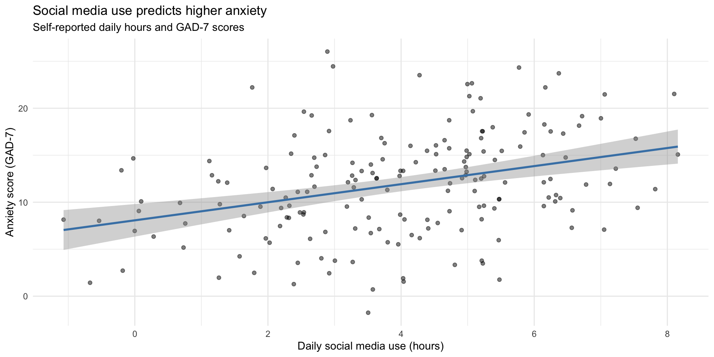
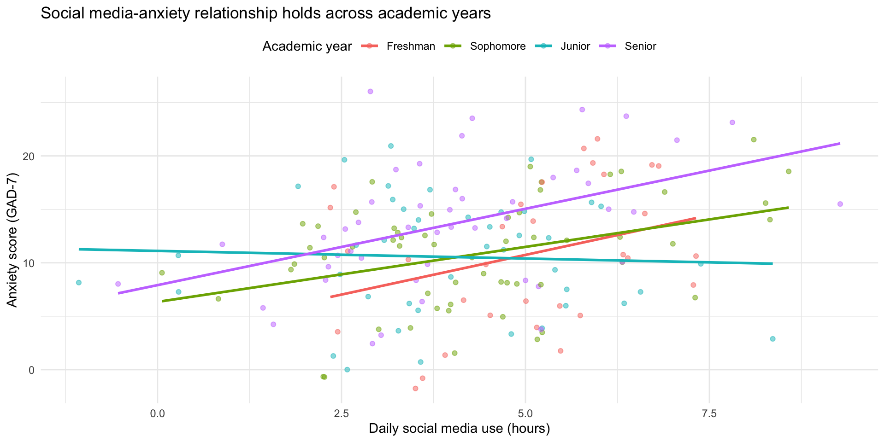
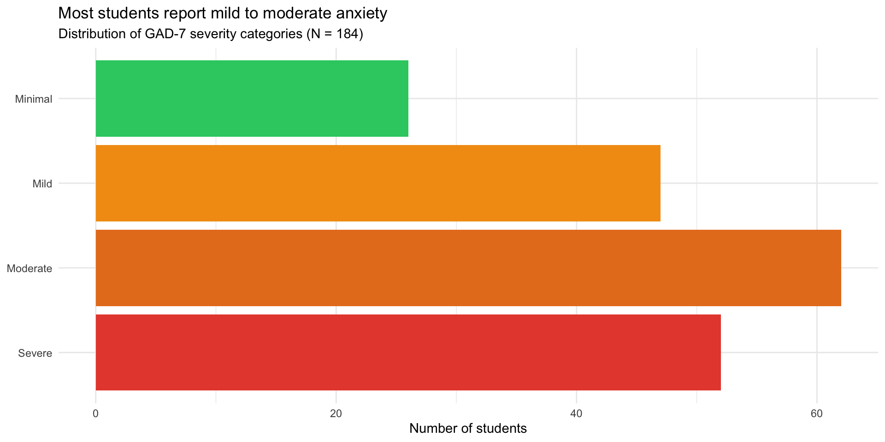

# Simulated college student survey data
set.seed(2026)
social_media <- tibble(
id = 1:200,
age = sample(18:24, 200, replace = TRUE),
gender = sample(c("Male", "Female", "Non-binary", "Prefer not to say"),
200, replace = TRUE),
hours_social_media = rnorm(200, 4, 2),
gad7_total = rnorm(200, 8, 5), # Generalized Anxiety Disorder scale
phq9_total = rnorm(200, 10, 6), # Depression scale
academic_year = sample(c("Freshman", "Sophomore", "Junior", "Senior"),
200, replace = TRUE)
) |>
mutate(
# Make anxiety correlate with social media use
gad7_total = gad7_total + hours_social_media * 0.8,
# Add some missing data
hours_social_media = if_else(runif(200) < 0.05, NA_real_, hours_social_media),
gad7_total = if_else(runif(200) < 0.08, NA_real_, gad7_total)
)Putting It All Together
PSY 410: Data Science for Psychology
Dr. Sara Weston
2026-06-03
Looking back
The data science workflow

Ten weeks ago, you couldn’t do any of this. Now you can do all of it.
Live demonstration
A real analysis: Start to finish
Let’s analyze a complete psychology dataset together.
Research question: Does social media use predict anxiety in college students?
I’ll demonstrate the full workflow:
- Import messy data
- Clean and tidy
- Explore with visualizations
- Create publication-ready figures
- Build a Quarto report
The dataset
Step 1: Explore the data
Rows: 200
Columns: 7
$ id <int> 1, 2, 3, 4, 5, 6, 7, 8, 9, 10, 11, 12, 13, 14, 15, …
$ age <int> 22, 18, 18, 23, 22, 24, 20, 21, 21, 22, 24, 21, 19,…
$ gender <chr> "Non-binary", "Prefer not to say", "Female", "Prefe…
$ hours_social_media <dbl> 3.3448174, 3.2895680, 5.5618681, 5.2173403, 6.15235…
$ gad7_total <dbl> NA, 11.577943, 12.102962, 17.555169, 18.276343, 15.…
$ phq9_total <dbl> 8.50042866, 8.19341562, 1.00400734, 10.20523209, 4.…
$ academic_year <chr> "Junior", "Freshman", "Sophomore", "Freshman", "Jun…Step 2: Clean the data
social_media_clean <- social_media |>
# Remove rows with missing outcome
drop_na(gad7_total) |>
# Create anxiety categories
mutate(
anxiety_category = case_when(
gad7_total < 5 ~ "Minimal",
gad7_total < 10 ~ "Mild",
gad7_total < 15 ~ "Moderate",
gad7_total >= 15 ~ "Severe"
),
anxiety_category = factor(anxiety_category,
levels = c("Minimal", "Mild", "Moderate", "Severe")),
# Reorder academic year
academic_year = factor(academic_year,
levels = c("Freshman", "Sophomore", "Junior", "Senior"))
)Step 3: Descriptive statistics
social_media_clean |>
summarize(
n = n(),
mean_age = mean(age),
mean_hours = mean(hours_social_media, na.rm = TRUE),
sd_hours = sd(hours_social_media, na.rm = TRUE),
mean_anxiety = mean(gad7_total),
sd_anxiety = sd(gad7_total)
)# A tibble: 1 × 6
n mean_age mean_hours sd_hours mean_anxiety sd_anxiety
<int> <dbl> <dbl> <dbl> <dbl> <dbl>
1 187 21.0 3.97 1.93 11.9 5.42Step 4: Initial visualization
ggplot(social_media_clean, aes(x = hours_social_media, y = gad7_total)) +
geom_point(alpha = 0.5) +
geom_smooth(method = "lm", color = "steelblue") +
labs(
title = "Social media use predicts higher anxiety",
subtitle = "Self-reported daily hours and GAD-7 scores",
x = "Daily social media use (hours)",
y = "Anxiety score (GAD-7)"
) +
theme_minimal()Step 4: Initial visualization

Step 5: Compute correlation
# Clean data for correlation (remove NAs)
correlation_data <- social_media_clean |>
drop_na(hours_social_media, gad7_total)
cor_value <- cor(correlation_data$hours_social_media,
correlation_data$gad7_total)
cor_value[1] 0.3388387Finding: Moderate positive correlation (r = 0.34)
Step 6: Explore by gender
ggplot(social_media_clean, aes(x = hours_social_media, y = gad7_total, color = gender)) +
geom_point(alpha = 0.5) +
geom_smooth(method = "lm", se = FALSE) +
labs(
title = "Social media-anxiety relationship holds across genders",
x = "Daily social media use (hours)",
y = "Anxiety score (GAD-7)",
color = "Gender"
) +
theme_minimal() +
theme(legend.position = "top")Step 6: Explore by gender

Step 7: Anxiety categories
social_media_clean |>
count(anxiety_category) |>
mutate(anxiety_category = fct_rev(anxiety_category)) |>
ggplot(aes(x = n, y = anxiety_category, fill = anxiety_category)) +
geom_col() +
scale_fill_manual(values = c(
"Minimal" = "#2ecc71",
"Mild" = "#f39c12",
"Moderate" = "#e67e22",
"Severe" = "#e74c3c"
)) +
labs(
title = "Most students report mild to moderate anxiety",
subtitle = "Distribution of GAD-7 severity categories (N = 184)",
x = "Number of students",
y = NULL
) +
theme_minimal() +
theme(legend.position = "none")Step 7: Anxiety categories

Step 8: Create summary table
summary_table <- social_media_clean |>
group_by(anxiety_category) |>
summarize(
N = n(),
Mean_Hours = mean(hours_social_media, na.rm = TRUE),
SD_Hours = sd(hours_social_media, na.rm = TRUE),
Mean_Age = mean(age),
.groups = "drop"
)
knitr::kable(summary_table, digits = 1,
col.names = c("Anxiety Category", "N", "M Hours", "SD Hours", "M Age"))| Anxiety Category | N | M Hours | SD Hours | M Age |
|---|---|---|---|---|
| Minimal | 19 | 3.0 | 1.7 | 21.2 |
| Mild | 51 | 3.2 | 2.0 | 20.9 |
| Moderate | 66 | 4.1 | 1.8 | 20.7 |
| Severe | 51 | 5.0 | 1.5 | 21.2 |
Step 9: Write it up in Quarto
## Results
We analyzed data from 187 college students
(M age = 21 years).
Students reported using social media an average of
4
hours per day (SD = 1.9).
Social media use was positively correlated with anxiety scores
(r = 0.34, p < .001), such that students who
used social media more reported higher anxiety levels.
```{r}
#| echo: false
#| fig-cap: "Relationship between social media use and anxiety"
# [Insert scatterplot code]
```What this demonstrates
✅ Complete workflow — import to interpretation ✅ Data cleaning — handling missing data, creating factors ✅ Multiple visualizations — exploring from different angles ✅ Summary statistics — both numerical and tabular ✅ Inline reporting — no hard-coded numbers ✅ Clear narrative — telling the story
When things break
The 6 errors you’ll see most often
| Error | What it means | Fix |
|---|---|---|
object 'x' not found |
Typo, wrong capitalization, or object not created yet | Check spelling; run the code that creates it |
could not find function |
Typo in function name or package not loaded | Check spelling; run library() |
unexpected symbol |
Missing |>, +, comma, or parenthesis |
Check the line before the error |
non-numeric argument |
Math on text — variable is character, not numeric | Check type with class() or glimpse() |
did you mean '=='? |
Used = (assignment) instead of == (comparison) in filter() |
Change = to == |
ggplot + error |
Missing + between ggplot layers |
Every line except the last needs + |
A 5-step debugging strategy
- Read the error message — actually read it. It tells you where and what.
- Check the basics — package loaded? Object created? Spelling correct?
- Run line by line — pipe chains: run from the top, adding one line at a time. Which line breaks?
- Simplify — make a tiny test dataset (
tibble(x = 1:3)) and try the same operation.
- Google it — include “R”, the package name, and the exact error message.
When you ask for help: make a reprex
Reprex = reproducible example — the smallest code that recreates your error.
Bad: “My code doesn’t work. Help!”
Good:
“I’m trying to filter my data but getting ‘object not found’:
library(tidyverse) data <- tibble(x = 1:3, y = c("a", "b", "c")) filter(data, x > 1) # Error: object 'data' not foundI expected rows where x > 1.”
Tip: Use dput() to share a small slice of your real data so others can recreate it exactly.
Where to get help after this course
- Stack Overflow — searchable Q&A (look for green checkmark ✅)
- Posit Community — friendly R forum
- R4DS Slack — real-time chat
- R-Ladies — supportive community with local chapters
Before posting: search first, be specific, show what you tried, and include a reprex.
Pair coding break
Your turn: Debug this code
This code has several errors. Find and fix them all:
Time: 10 minutes
Tip
There are at least 4 bugs. Read each line carefully and check: names, operators, punctuation.
Before we move on
Upload your code to Canvas for participation credit. Paste what you have into today’s in-class submission — it doesn’t need to work perfectly.
Where to go from here
You have the foundation
This course covered data wrangling and visualization — the foundation of data science.
What’s next?
- Statistics in R — inference, hypothesis testing
- Advanced R programming — functions, iteration
- Version control — Git and GitHub
- Interactive tools — Shiny dashboards
- Machine learning — tidymodels framework
Statistics in R
You can now learn inferential statistics:
Courses to consider:
- PSY 420: Advanced Statistics
- STAT 510: Applied Regression
- Online: Learning Statistics with R
Writing functions
Automate repetitive tasks:
Version control with Git
Track changes to your code over time:
- Never lose work — full history of changes
- Collaborate easily — merge changes from multiple people
- Professional standard — expected in industry and academia
Resources:
Interactive visualizations with Shiny
Create web apps for your data:
Machine learning with tidymodels
Predictive modeling with tidy syntax:
Learning resources
Free online resources
Books:
- R for Data Science (2e) — your textbook
- Learning Statistics with R
- Advanced R
- ggplot2: Elegant Graphics for Data Analysis
Interactive learning:
- Posit Primers
- R-Bootcamp
- swirl — learn R in R
Community resources
Weekly challenges:
- #TidyTuesday — practice data viz
- Advent of Code — programming puzzles
Communities:
- R-Ladies — inclusive R community
- R for Data Science Slack
- Posit Community
- Local R user groups (search Meetup.com)
Keep practicing
The only way to maintain skills: use them
Ideas:
- Analyze data from your own research
- Replicate figures from published papers
- Join #TidyTuesday
- Help friends/labmates with their data
- Create a personal website with Quarto
- Build a data visualization portfolio
Tip
Aim for 1 hour per week — consistency matters more than intensity
Final reflections
What makes a good data scientist?
It’s not about knowing every function or memorizing syntax.
Good data scientists:
- Ask good questions — what story is the data telling?
- Stay curious — always learning new tools and techniques
- Communicate clearly — make complex findings accessible
- Work reproducibly — others can verify and build on your work
- Think critically — question assumptions, check for bias
- Persist through errors — debugging is part of the job
You’ve developed all of these skills this quarter.
The growth mindset
Ten weeks ago, many of you had never written a line of code.
Now you can:
- Import and clean messy data
- Create publication-quality visualizations
- Wrangle complex datasets with joins and pivots
- Handle missing data appropriately
- Build reproducible reports
That’s incredible growth.
Errors are part of the process
Remember:
- Everyone gets errors — even experienced programmers
- Errors mean you’re learning
- Each error you solve makes you better
- The frustration is temporary; the skills are permanent
Important
If you take one thing from this course: You can learn hard things.
Thank you
Thank you for:
- Showing up and participating
- Helping each other
- Asking questions
- Persisting through challenges
- Trusting the process
You’ve been a great class. I’m excited to see what you do with these skills.
Final project presentations
Presentation guidelines
Format: 5 minutes per person
What to include:
- Research question (1 min)
- Dataset description (1 min)
- Key finding with visualization (2 min)
- Implications/what you learned (1 min)
Tips:
- Show 1-2 of your best figures
- Focus on the story, not technical details
- Practice timing!
Presentation order
We’ll go alphabetically by last name.
Remember:
- This is a supportive environment
- Everyone is nervous — that’s normal
- We want to hear about your work
- Questions are signs of interest, not criticism
Course evaluations
Please fill out course evaluations
Your feedback helps me improve the course for future students.
What’s helpful:
- Specific examples (this assignment, that lecture)
- Constructive suggestions
- What worked well (so I keep doing it)
- What didn’t work (so I can change it)
I read every evaluation carefully.
Final words
Keep learning
The field of data science is constantly evolving:
- New packages are released every day
- Best practices change
- Tools improve
Stay curious. Stay connected. Keep coding.
You’re now a data scientist
You have the skills to:
- Answer questions with data
- Create compelling visualizations
- Conduct reproducible research
- Teach yourself new tools
Use them.
Make psychology more reproducible, transparent, and data-driven.
Final final words

Thank you!
Good luck with your final projects and future data science adventures!
Stay in touch:
- ?var:instructor.email
- Office hours (through finals week)
Now let’s see your final projects! 🎉
PSY 410 | Session 18